Aberto agora
Pão fresco, salgado e lanche na chapa todo dia
Pães frescos e receitas tradicionais no Jardim Paulista, em Olímpia. Monte seu pedido aqui, envie pelo WhatsApp e retire no balcão ou receba em casa.
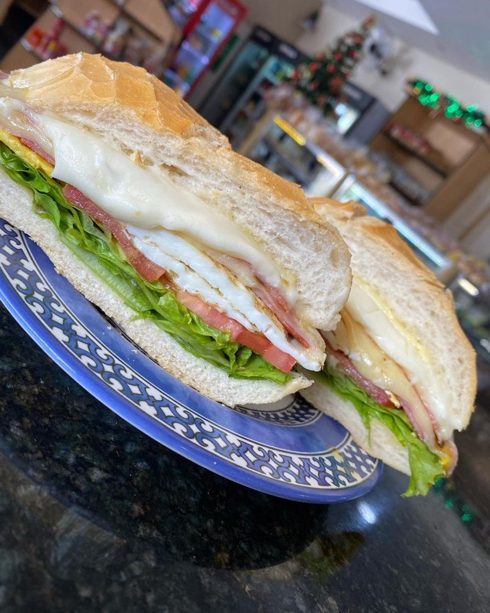
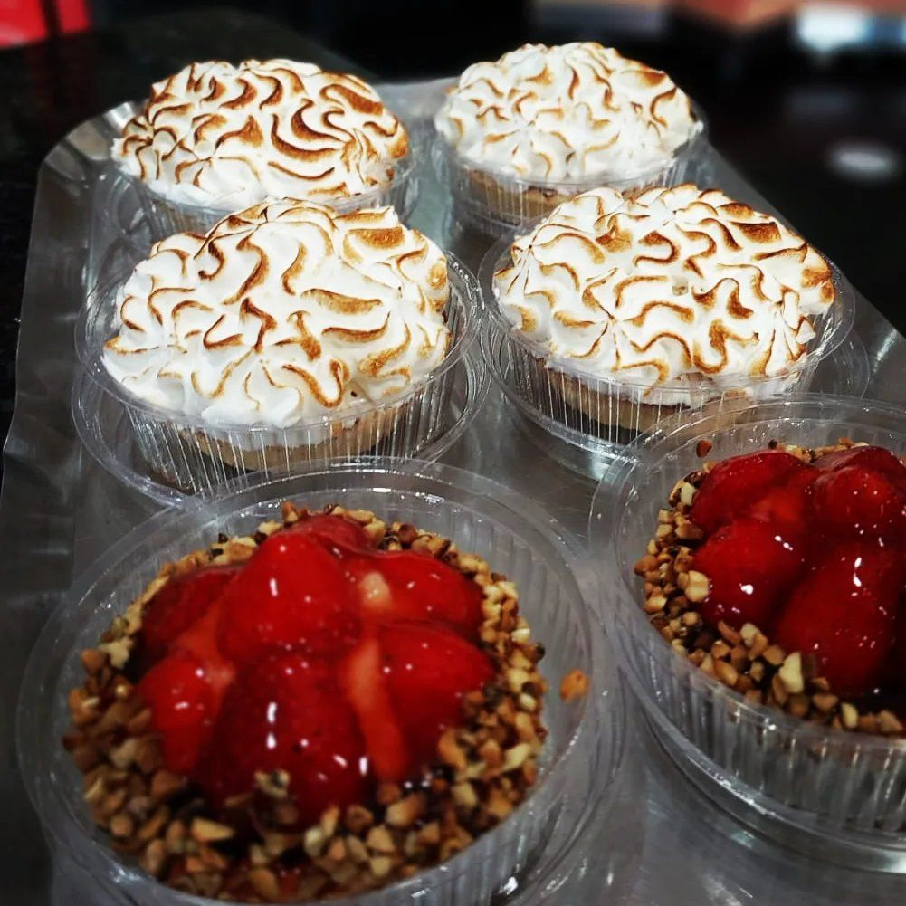
4,6no Google
Cardápio
Preços do cardápio publicado pela padaria. Toque no + para montar o pedido.
Confeitaria e bolos
A vitrine muda todo dia. Pergunte o que tem hoje.
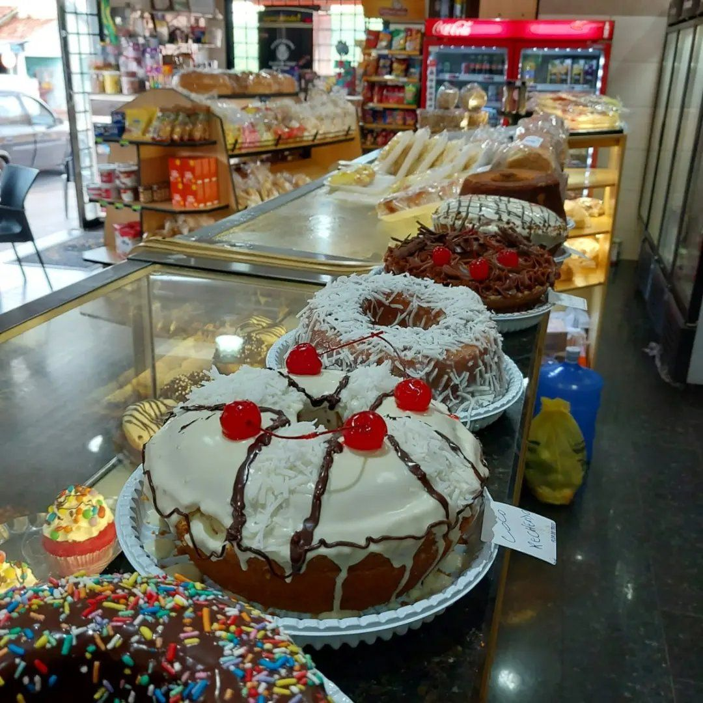
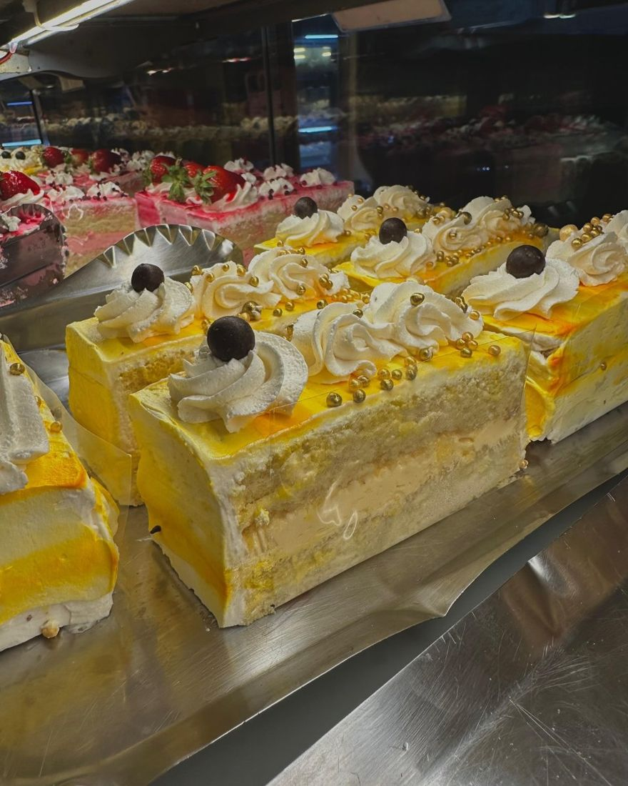
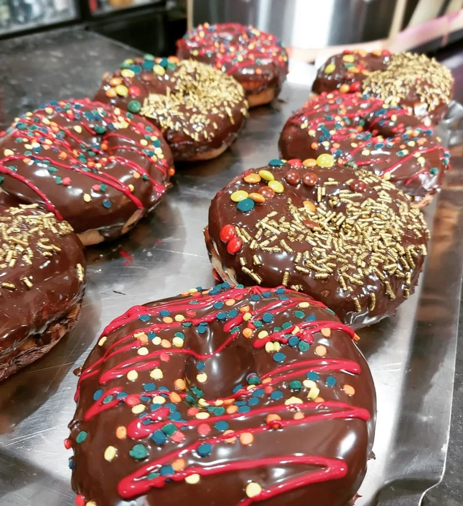
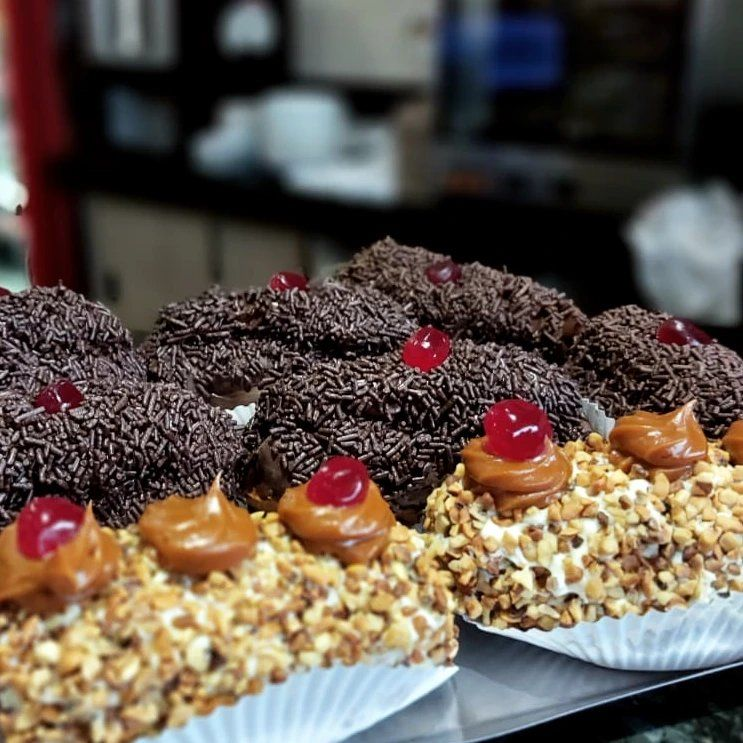
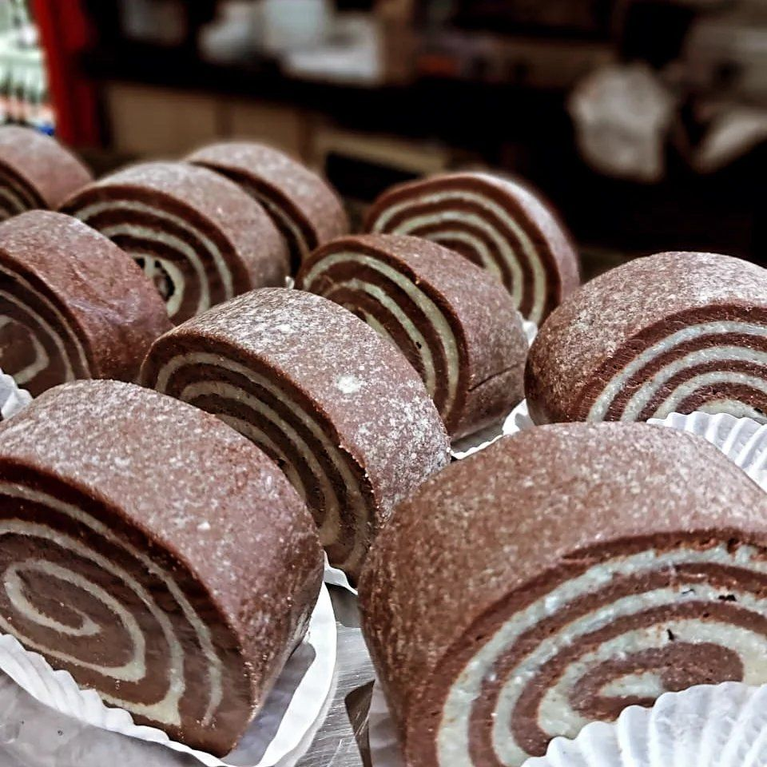
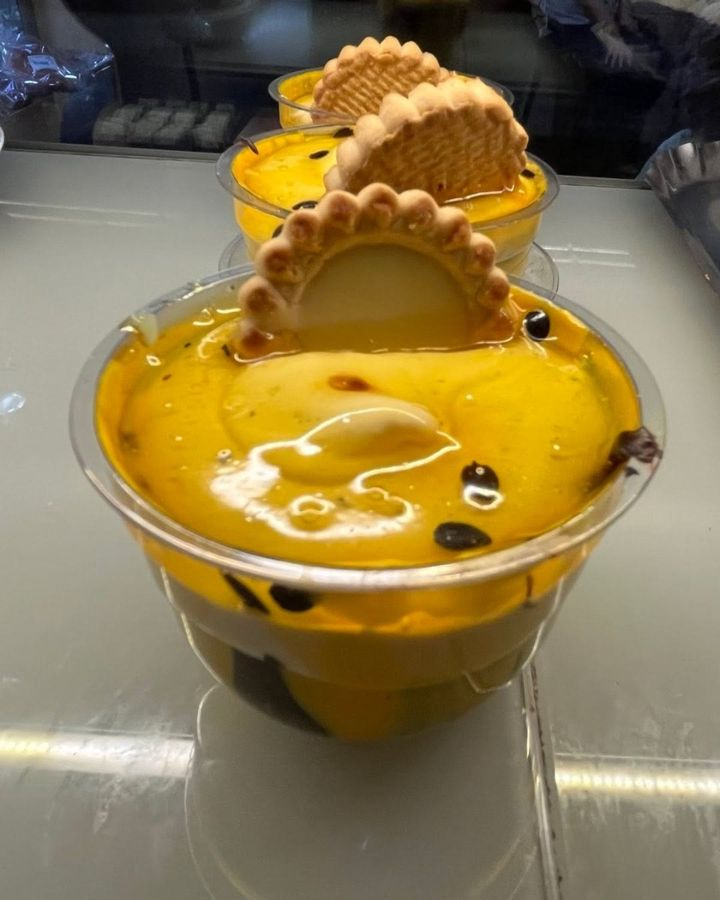
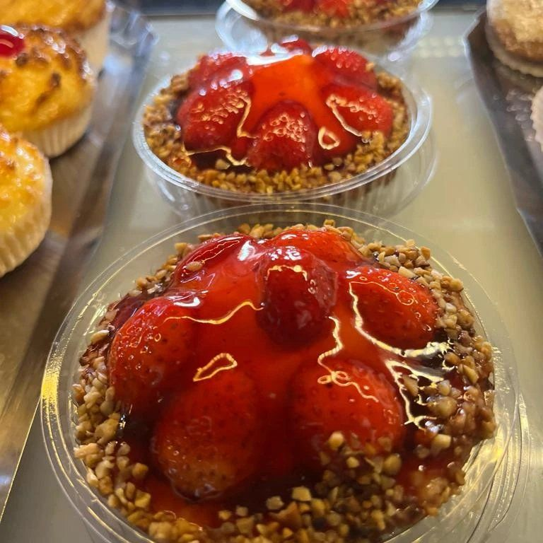
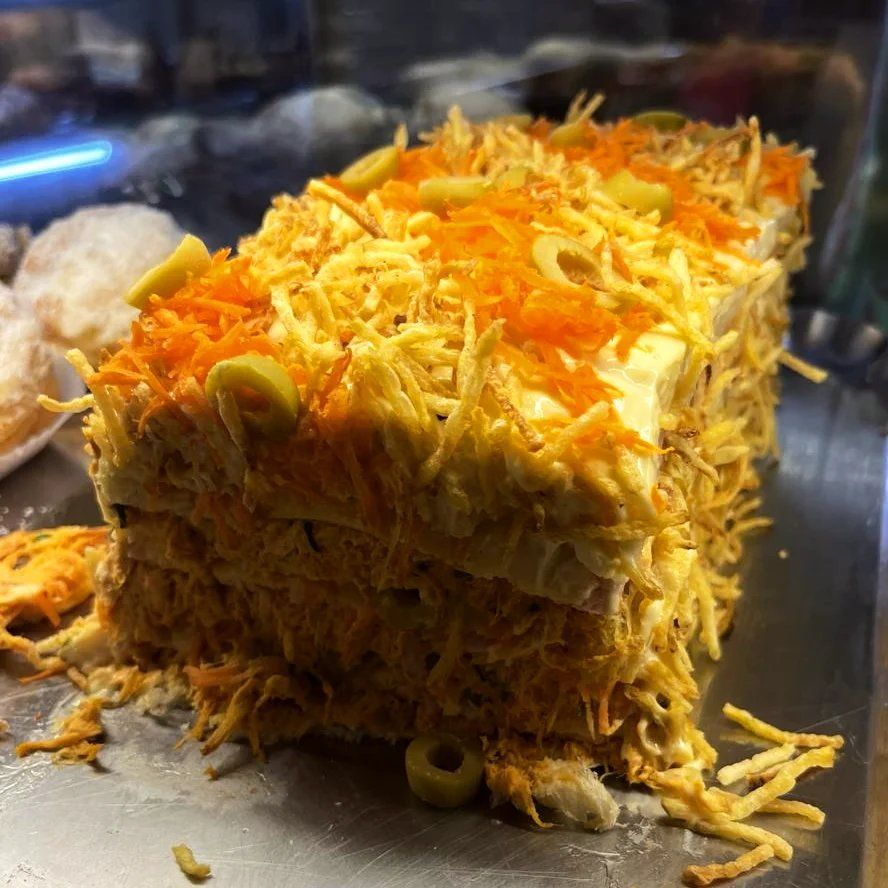
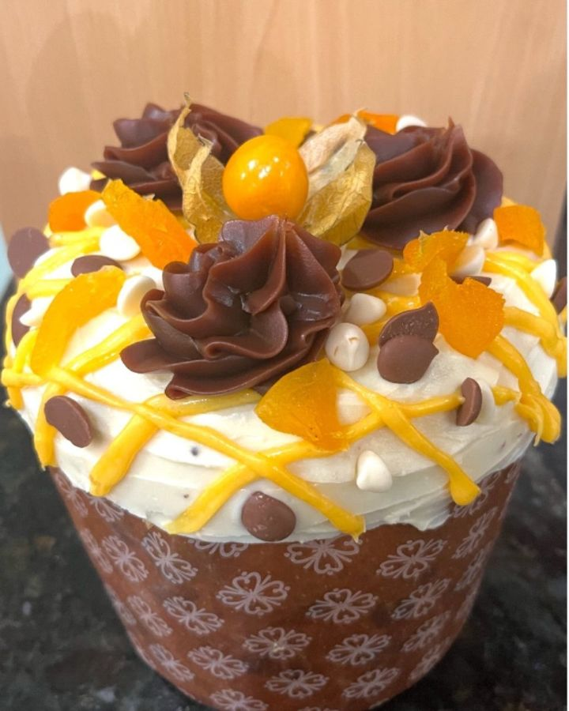
Encomendas para festa
Mini salgados: bolinha de queijo, coxinha de frango, kibe, risoles de presunto e queijo, esfirra de carne ou de frango, croissant de frango com catupiry ou de presunto e queijo, e churros de doce de leite. Bolos e tortas também saem sob encomenda.
Bolos e tortas: valor sob consulta. Combine sabores, quantidade e horário pelo WhatsApp.
Encomendar pelo WhatsApp4,6240 avaliações no Google
O que dizem no Google
Quem avalia a Flor do Trigo no Google Maps fala principalmente dos salgados, do pão de queijo, do café e do atendimento.
- salgados
- pão de queijo
- café
- doces
- simpatia
- ambiente
Passa aqui
| Segunda a sábado | 5h30 às 19h |
|---|---|
| Domingo | 6h às 12h |
Olímpia - SP